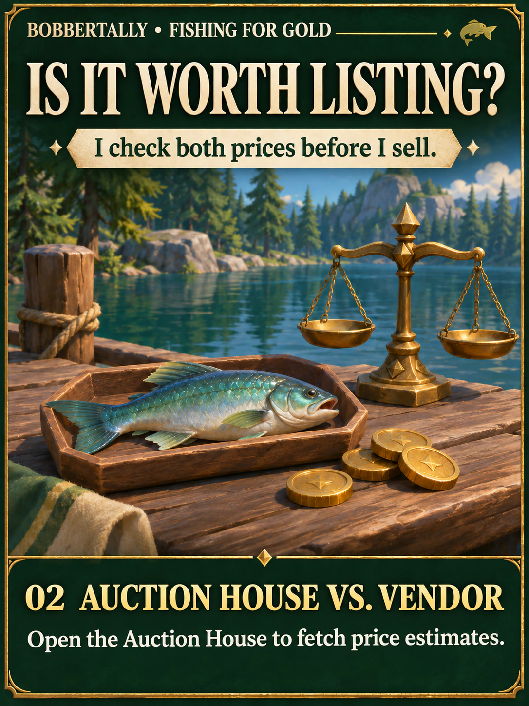
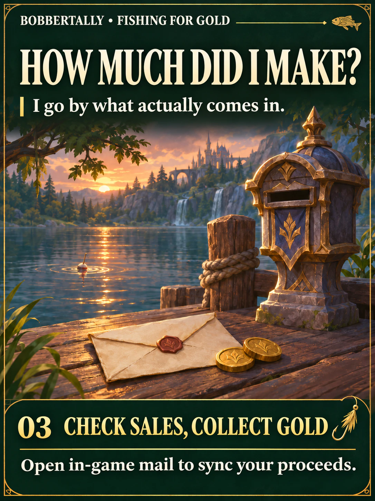

Since when did WoW fishing involve bookkeeping? 🎣
I logged in to cast a line a couple of times and unwind.
An hour later, I was at the Auction House working out whether one fish was worth another trip to the mailbox.
I’ve been using BobberTally in World of Warcraft: Forever, and somehow my quiet afternoon by the lake turned into running a fish stall.
Pick a fish before you cast
Look up fish by zone in the add-on and click a spot to open the map. I used to fish wherever I ended up. Now I check which river I’ll be stocking up from before I leave.

Compare prices after you fish
Open the Auction House and use the add-on to compare listings with what a vendor pays. If the gap is big, I list the fish. If it’s a few silver, I sell to the vendor. My patience costs more than a few silver.

The mailbox tells you what you made
When I list the fish: “I’m going to make a fortune tonight.”
When I open the mailbox: “Hello, your fish has been returned.”
These days I go by what actually comes in. I can come home without catching a fish. I can’t put 20 imaginary gold in the books.
